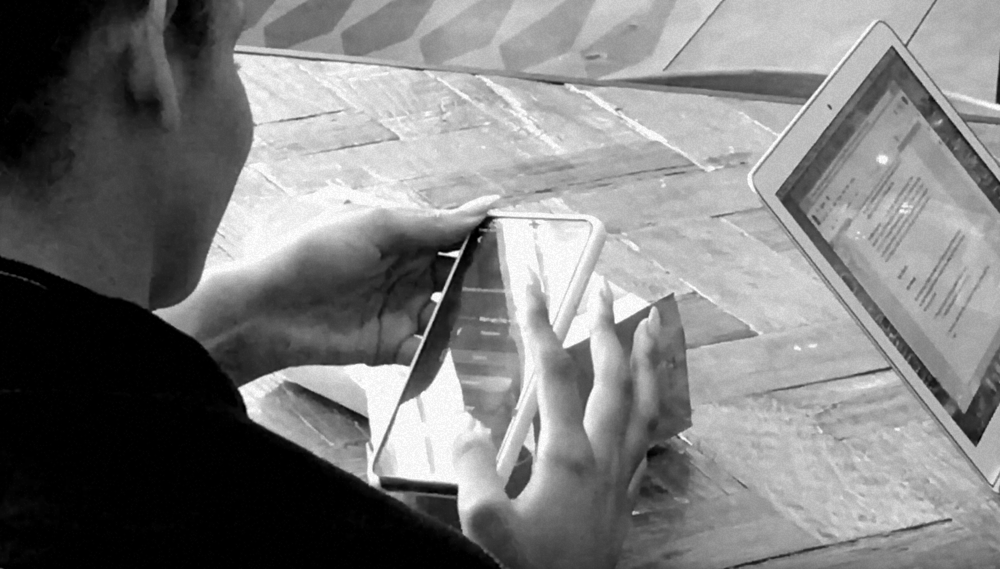
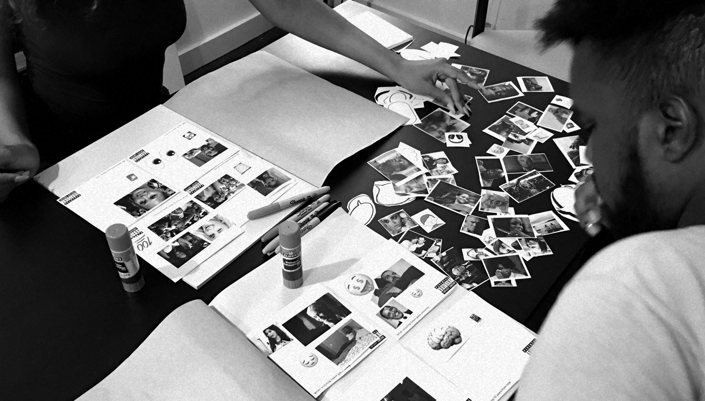

How might Triller build a tool to help A&R’s find new talent?
Table of contents
Context
Rapid change in the music industry
The pace of music consumption in the digital age is growing rapidly. Artists fight to stay relevant in a hyper-competitive space and ultimately many end up with a shortened shelf-life as a new star is born every couple weeks.
The transforming role of A&R’s
A&R’s have always been on the lookout for new talent, as representatives of the label who sign artists and develop their talent. This role has changed a lot as A&R’s now aim to find talent with already bubbling online fan bases that labels can capitalize off of. Companies have started to build tools to help A&R’s find talent in an ever expanding digital landscape where A&R’s are expected to lock in talent before another label can snatch them up.
Triller as a breeding ground for new talent
Social video apps like Triller, TikTok, and even Instagram have become a breeding ground for songs to blow up. This has helped both established artists popularize song like “Plug Walk” as well as new acts rise to fame like Lil Nas X or BoyBoy West Coast. As this happens, Triller is positioned with exclusive access to a dataset that can be used to make a product to help A&R’s find new talent.

The Verge writing about the impact of social video apps in the music industry
Methodology
Scoping out the project
When putting together foundational research, it’s important to be rigorous with the scope of your project to ensure it delivers value within the constraints of a timeline. I started by thinking about what research may already exist at Triller (ie. artist-centered research) as well as what information would make the most impact when building a new tool for A&R’s. This helped me form the knowledge gaps to tackle and I focussed in on 4 core research areas to tackle:
✣
Understanding A&R’s and the workflow for signing new talent
✣
This will be a really long sentence that is two lines
✣
A&R’s impression of Triller
✣
A&R pain points and areas of opportunity
Designing an approach
With research it’s always better to observe than to ask, but with zero budget, I had to be strategic with the limited amount of time I could generate with A&R’s over the course of this project. Ideally a diary study over a longer period of time could have helped to understand an artist recruitment process which happens over a longer period of time, but without the luxury of doing that, I made sure to tackle the problem with multiple, more feasible methods to really get at the “why’s” which are so important during the foundational research phase.
My approach utilized a combination of
1-1 interviews, a
usability study,
competitive analysis,
journey mapping, and a
co-design. I’ve gone into more details about these through the lens of each research area below and linked out to the deliverables from each method as well.
Research Questions
Understanding A&R’s and their workflow for finding new talent
Approach
Interviews with A&R’s in the field were critical as literature on the topic is quickly becoming outdated. I looked closely at the Jobs To Be Done framework as I formed my questions since it closely linked to the type of deliverables I would produce to inform our research area. Learnings about how to interact with A&R’s during these interviews also helped me as I would later use more complex methods such as the co-design.
When recruiting participants, I thought it was critical to make sure I was representative of all A&R’s in terms of years in the field, genres they worked with, and the scale of the labels they worked at. I started with a set of cold emails but ultimately found that referrals from people I interviewed lead to more reliable results.

1-1 interview session with an A&R
Challenges
During the first couple interviews, I was taking notes while interviewing rather than transcribing at a later time. Upon listening to the recordings and reflecting with my mentor Basim (UX lead at Soundcloud at the time) I realized it was important to be 100% present for the conversations and so I switched up my approach to help the participants feel more engaged.
I found that while I am aware of slang, A&R’s tended to have a very heavy use of it, and so I made sure to ask clarifying questions to make sure I was not adding my own bias in interpreting their responses.
As I started to put together a journey map , I realized that it might have been a better decision to break out the workflow questions by the phases of the artist recruitment process. In retrospect, this would have allowed participants to really zone into the nuances each phase of finding, engaging, and signing a new artist. Luckily I had built enough rapport with some of the A&R’s to be able to ask follow-up questions via email.
Communication
Since we’re tackling a process that extends over a period of time, I created a journey map to identify pain points and areas of opportunity contextualized to the overall process, allowing the product team to identify strategic approaches different areas on the map.
I also took data from the interviews to create a short deck that answer sub-questions to paint a picture of who A&R’s are to help the team brainstorm from a shared, research-driven perspective.
The current landscape of A&R tools
Approach
In the early phase of developing a product, it’s important to avoid working in a vacuum, but rather think carefully about how your product fits into the landscape of tools available to your customer.
While I asked A&R’s about their perspective on the current tools, I knew I needed to go out and try other tools to get a holistic picture of the market. Not only did I look into existing tools, but I also brought in other products that were well-positioned to enter the market based on their unique assets (ie. Instagram with their data on music posted within the Stories feature) as well as products that had been successful in the past and had lessons to learn from.
Challenges
It wasn’t feasible to buy subscriptions to all the available products. However, all these companies have marketing decks posted online that they use to sell to prospective customers. I was able to go through these and extract a great deal of data, making inferences on each company’s strategic approach to the market. An A&R I interviewed and built rapport with also gave me access to some of his tools for a limited time.
Communication
During foundational research, it’s critical to not get caught up in features, but really create a high-level strategic positioning for the product. I approached my deliverables in a way that would facilitate this kind of thinking. Rather than list out a feature matrix, I focussed on noting the data sources being pulling from and condensed the strengths and weaknesses of each tool. I also created a brand matrix to contextualize how each product was positioned and where there might be gaps in the market.
A&R’s impression and experience with Triller
Approach
Before investing in a new product, it’s important to understand A&Rs’ impression of the product as a tool for artist discovery and how well they are already able to use it to fulfill their needs
In order to not create bias, I started by giving them an open ended scenario to see their full approach to finding talent without guidance. Afterwards I directed them to get feedback on specific features, even if they had potentially been too buried in the app to be found.
Challenges
I found that the app had a lot of unconventional navigation patterns that detracted from the A&Rs’ ability to freely navigate. While it’s useful to point these things out to the team, it often lead to participants asking me for guidance which I had to avoid doing during the open ended question.
Normally you might be able to ask your team to adjust a prototype if it’s distracting from what you’re trying to test. In my case, I reconciled this by finding a balance where, while I did not give them answers on how to perform specific tasks, I did help them navigate out of a particular tricky screen if they were stuck for too long. This along with some reassurance that there was no pressure and that they weren’t being judged helped move things along.

One of the screens participants had difficulty navigating out of
Communication
As I compiled insights from the session, I tried to create high level headlines grouped by the positive and negative sentiments found. I also created a separate section that called out the main usability problem that came up.
Teams often find it hard to hear criticism of their work and so it’s important when you present your findings, to do so respectfully, but also provide real user quotes to underline the importance of the feedback.
Identifying pain points and areas of opportunity
Approach
It was really critical for me to approach this research area by probing from multiple angles. Aside from the 1/1 sessions that helped inform the journey map, I thought a co-design session with A&R’s would help us understand what they wanted out of a future A&R tool.
Before conducting the actual session, I tested out methods by running practice sessions with friends about topics relevant to them. Through this process I learned some key things that helped me adjust my approach:
I learned that while it’s important to create a fun and open space for ideation, it’s easy for everyone to lose track of time and so in order to make sure no one needs to leave halfway through the activities, it’s crucial for the facilitator to keep an eye on time and remind participants along the way.
I also learned from both my practice session as well as the 1/1 interviews that I needed a note-taker, so that I could focus on asking expanding questions to feel out what participants mean by the things they were creating during the session. I enlisted the help of a designer friend who also joined as a participant for the breakout activities.
And finally, I learned that when doing creative activities (ie. the collage), doing an example beforehand and showing the participants helps guide them to feel more comfortable and focusses them on creating something with the level of depth you are looking for.

A generative activity where participants tell stories through an album art collage
Challenges
I used some of the people I had gotten for the 1/1 interviews to join me for the co-design where we could probe further. Asking for an additional hour of their time and brainpower to design felt like a lot, and so I made sure to be flexible to their packed schedule and ended up doing the codesign at one of their apartments one night.
While I tried my best to prepare for the session, I learned that you can never really plan for everything -- in this case a weed delivery in the middle of the session, something that was commonplace in the music industry. In moments like these it’s important to roll with the punches and make sure you’re thinking about making the participants feel at home -- after all, I was literally in their space for the session.
Communication
It’s really important to communicate that ideas coming out of a codesign are not to be directly adopted, and so I kept that in mind as I communicated the insights behind the ideas from the session. The deck I created starts with high-level takeaways and then goes into deep dives which link to quotes from the sessions.
I believe the artefacts from a codesign can be really powerful in motivating a team, and in a real-world scenario I would post these up in our office walls alongside the insights to contribute to an open design culture where everyone is active and talking about the design of the product.
CODESIGN
Working with A&R’s to design the tool of the future
OPEN SLIDES →
Impact
I’m currently in the process of reaching out to the Triller team to present my findings.
Reflection
Being creative with your approach
Coming from the data world, there was always a very strict approach that wasn’t malleable to creative solutions. This initially influenced my approach to qualitative research and made me feel like I was at a disadvantage without the proper budget and resources of a big company.
After a number of conversations with researchers in the industry however, I found that even at established companies, teams appreciated out-of-the-box thinking instead of strict academic papers.
I manifested this approach in my through the project in places like my recruitment methods, the activities I created for the co-design, and even in the way I formatted my findings for my deliverables.
Triller as a breeding ground for new talent
While creative solutions are great, they are not an excuse to lack rigour in your craft. I took this very seriously and was lucky enough to have mentorship from Basim Al-Baker (research lead at Soundcloud at the time of this project).
Early on, I remember being excited from the findings from my first study and Basim reminding me the importance of not letting those findings bias me for the studies I still had to run. Basim also challenged me in my approach to encoding qualitative data and pushed me to be very thorough and nuanced with the insights I gleaned from the studies.
I really appreciated Basim’s insight and even more so his patience and positivity when working with someone transitioning from another field. It’s working with people like him that remind me of the importance to give back and facilitate learning with rigor in you field.